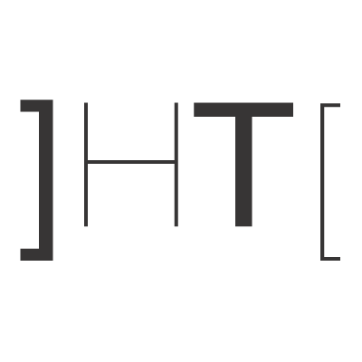

hacking team

Hacking Team è una società di Information technology con sede a Milano che vende servizi di intrusione offensiva e sorveglianza a governi, organi di polizia e servizi segreti di tutto il mondo (sono stati costruiti rapporti e relazioni anche a diretto riporto del Presidente degli Stati Uniti d'America, lavorando con NSA, CIA ed FBI). I suoi sistemi di controllo remoto vengono utilizzati soprattutto per la lotta al terrorismo, al narcotrafficointernazionale e alle mafie, in quanto permettono di monitorare le comunicazioni degli utenti di Internet, decifrare i loro file e le loro e-mail criptati, registrare le conversazioni telefoniche, Skype e altre comunicazioni Voice over IP, di attivare a distanza microfoni e videocamere sui computer presi di mira, tenere sotto controllo telefoni cellulari (telefonate, rubriche, SMS, spostamenti, calendari ecc.), di leggere e rilevare anomalie nel mondo dei social network. La società è stata criticata per aver fornito tali servizi a governi scarsamente rispettosi dei diritti umani. Hacking Team dichiara di essere in grado di disabilitare i software distribuiti in caso di uso non etico. Nel giugno 2014 un rapporto dell'Università di Toronto espose dettagliatamente l'architettura e la funzionalità del software Remote Control System (RCS) di Hacking Team. Nel luglio 2015 la società è rimasta a sua volta vittima di attacco hacker, per effetto del quale molto materiale altamente riservato è stato reso di pubblico dominio. Hacking Team fu avviata nel 2003 da due programmatori italiani, Alberto Ornaghi e Marco Valleri. Prima che la società nascesse i due programmatori avevano creato un insieme di applicazioni per monitorare e manipolare PC da remoto; il programma Ettercap era adottato da hacker, ma anche da ditte per verificare i propri sistemi di sicurezza. Successivamente il programma fu acquistato dalla questura di Milano. Era nata Hacking Team, e divenne "il primo fornitore di hacking software commerciale per la polizia." Nel settembre 2011 l'azienda milanese si relaziona ai massimi livelli con la società Booz Allen Hamilton: il vicepresidente Mike McConnell, potentissimo zar dell'intelligence di George W. Bush, è l'uomo che incarna uno dei massimi esponenti dell'intelligence mondiale, essendo stato anche direttore dell'NSA e direttore del National Intelligence (a diretto consiglio del Presidente degli Stati Uniti d'America nel contrasto al terrorismo). Nel 2013 la società ha avviato una trattativa con il governo dell'Arabia Saudita per essere acquisita dallo stesso. In alcuni incontri Hacking Team ha mostrato la capacità della sua tecnologia di bloccare una centrale atomica in Iran, regime di ispirazione sciita, nemico storico dei sunniti e della famiglia reale saudita (un attacco che Stati Uniti e Israele insieme fecero proprio contro l'Iran e la centrale nucleare di Natanz, andando a disegnare la pagina più importante nella storia delcyberterrorism: lasciando i sospetti sulle relazioni, anche commerciali, fra Hacking Team e i servizi di intelligence di questi Paesi. Della questione Natanz si è occupato anche il regista premio Oscar Alex Gibney con il suo documentario Zero Days, in concorso per l'Orso d'Oro al Festival internazionale del cinema di Berlino nel febbraio 2016). La trattativa con il governo saudita ha subito diversi rallentamenti, anche a causa della discordanza sulle quote di distribuzione dei dividendi. La società era stata valutata di altissimo valore militare ed economico, ma la famiglia reale araba non voleva andare oltre i 40 milioni di spesa per acquisirla. Fra i mediatori dell'operazione c'è stato Wafic Said, il terzo arabo per patrimonio personale tra i miliardari in Gran Bretagna. Altro fattore di rallentamento l'allontanamento dal vertice dei servizi di intelligence del regime saudita del principe Bandar bin Sultan, storico trait d'union tra le intelligence occidentali (Hacking Team aveva intessuto relazioni con lui) e il re con la lobby saudita (precedentemente Bandar bin Sultan, da ambasciatore arabo negli USA, è stato anche consigliere di George W. Bush sui temi della sicurezza). Sulle cifre dell'operazione restano comunque molti dubbi, in quanto non si hanno documentazioni precise al riguardo, ma solo scarse notizie.